Medicina General
Diagnóstico primario, prevención comunitaria y canalización oportuna con especialistas.
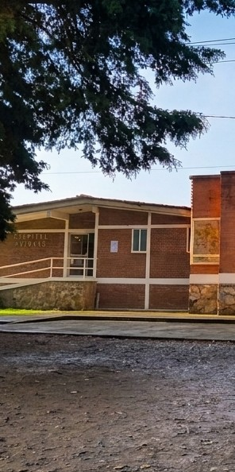
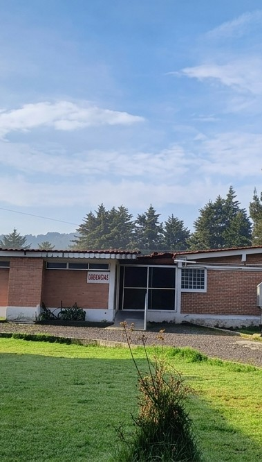
Centros de Orientación Familiar y Salud, I.A.P.
Atención médica con calidez humana, compromiso social y vocación al servicio de nuestra comunidad.
Atención médica profesional respaldada por especialistas certificados.
Diagnóstico primario, prevención comunitaria y canalización oportuna con especialistas.
Intervenciones quirúrgicas electivas y de urgencia con tecnología avanzada y recuperación asistida.
Atención integral y diagnóstico especializado para el tratamiento de enfermedades sistémicas y crónicas del adulto.
Cuidado continuo del crecimiento, esquemas de vacunación y tratamiento pediátrico integral desde recién nacidos.

Acompañamiento en el embarazo, salud reproductiva y atención integral para el bienestar de la mujer.

Diagnóstico y rehabilitación de fracturas, lesiones musculares, articulares y del aparato locomotor.
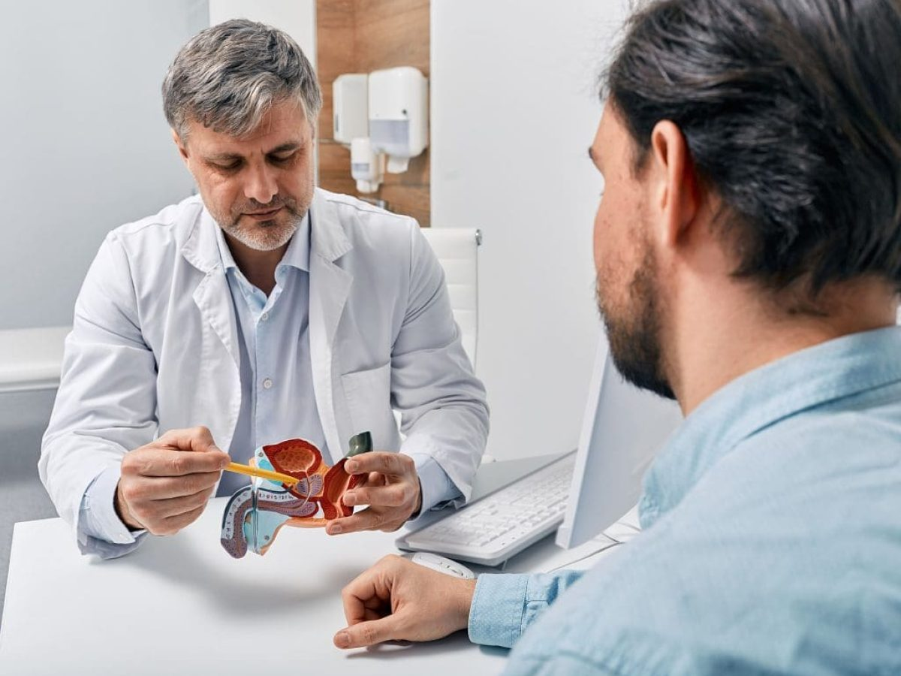
Cuidado y tratamiento especializado del aparato urinario y del sistema reproductor masculino.
Corrección de la posición dental, armonía maxilofacial y mejora funcional y estética de la sonrisa.
Tratamiento de enfermedades de los vasos sanguíneos, problemas circulatorios y várices.
Prevención, detección y tratamiento de padecimientos cardiovasculares e hipertensión arterial.
Prevención, limpiezas dentales, extracciones y tratamientos integrales para la salud bucal.
Apoyo emocional, orientación terapéutica individual y familiar para el equilibrio mental.

Atención programada para valoración clínica, seguimiento de diagnósticos y recetas médicas.

Terapias complementarias e integrales orientadas al equilibrio natural y bienestar del paciente.
Exploración visual del tracto digestivo superior para diagnóstico certero de gastritis, úlceras y reflujo.
Estudio especializado para la detección oportuna de pólipos y afecciones del colon e intestino grueso.

Toma de muestras clínicas, estudios hematológicos, bioquímicos y bacteriológicos certificados.
Habitaciones acondicionadas con monitoreo permanente de enfermería para una óptima recuperación.
Salas quirúrgicas equipadas con tecnología de vanguardia y estrictas normas de bioseguridad.

Acompañamiento obstétrico cálido y seguro para el nacimiento y primeros cuidados del recién nacido.
Diagnóstico por imagen digitalizado de alta resolución para valoración anatómica precisa.

Atención médica continua las 24 horas para respuesta inmediata ante eventos críticos.
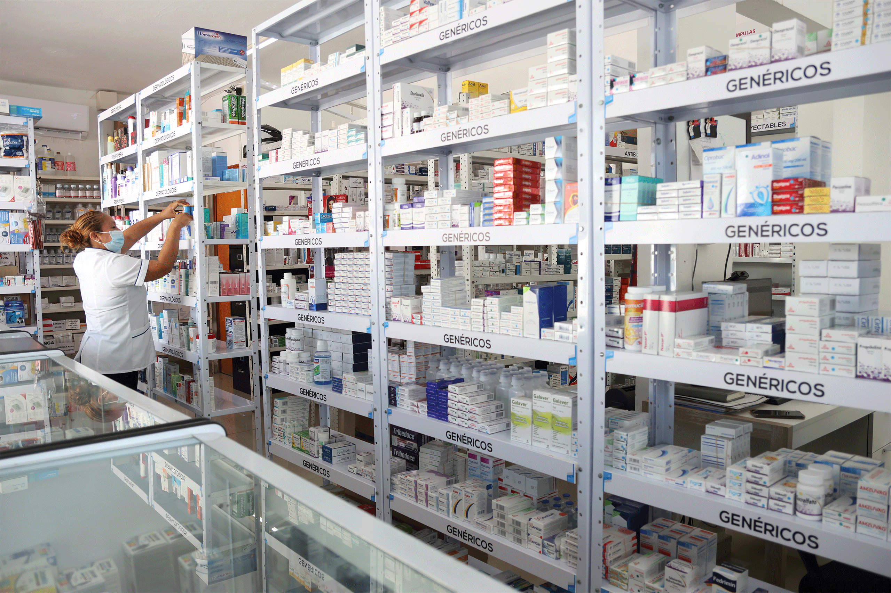
Abastecimiento confiable de medicamentos de patente y genéricos esenciales con atención al público.
Generar bienestar en las comunidades, a través de un sistema innovador de servicios integrales de salud.
Somos un sistema de bienestar comunitario que brinda la mejor experiencia en servicios de salud.
Áreas diseñadas para ofrecer la mejor calidad en atención médica.
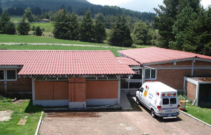
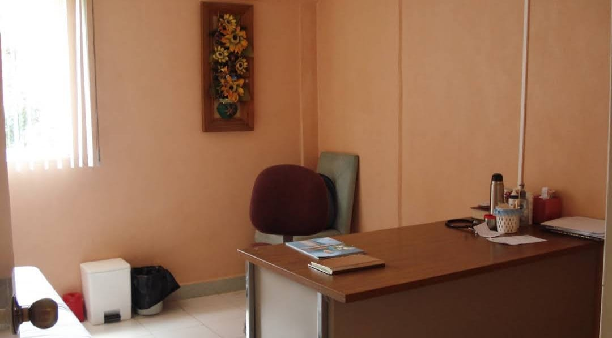
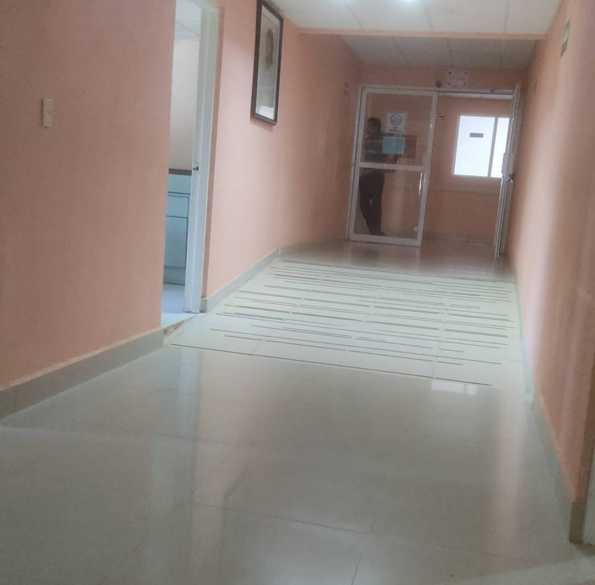
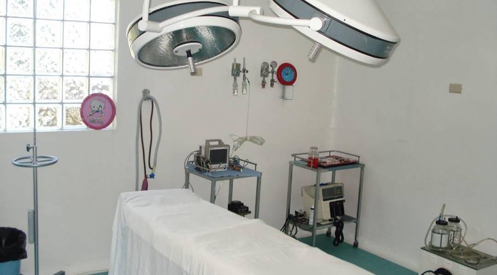
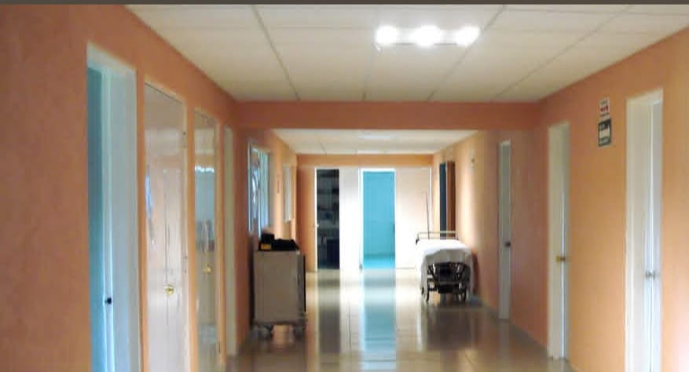
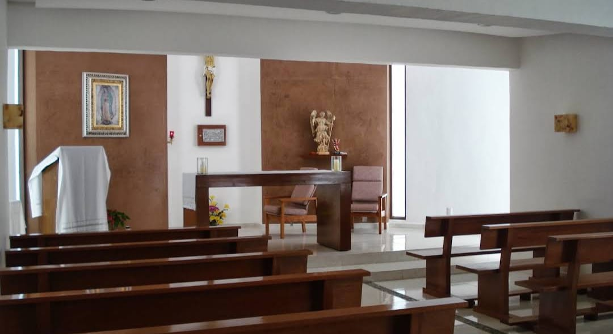
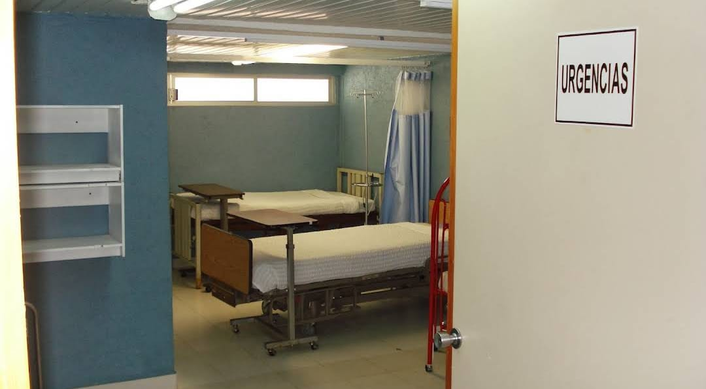
Hospital Mazahua, Santa Ana Nichi, San Felipe del Progreso, México, C.P. 50686
Lunes a Sábado de 8:00 am a 3:30 pm
Lunes a Sábado de 9:00 am a 3:00 pm